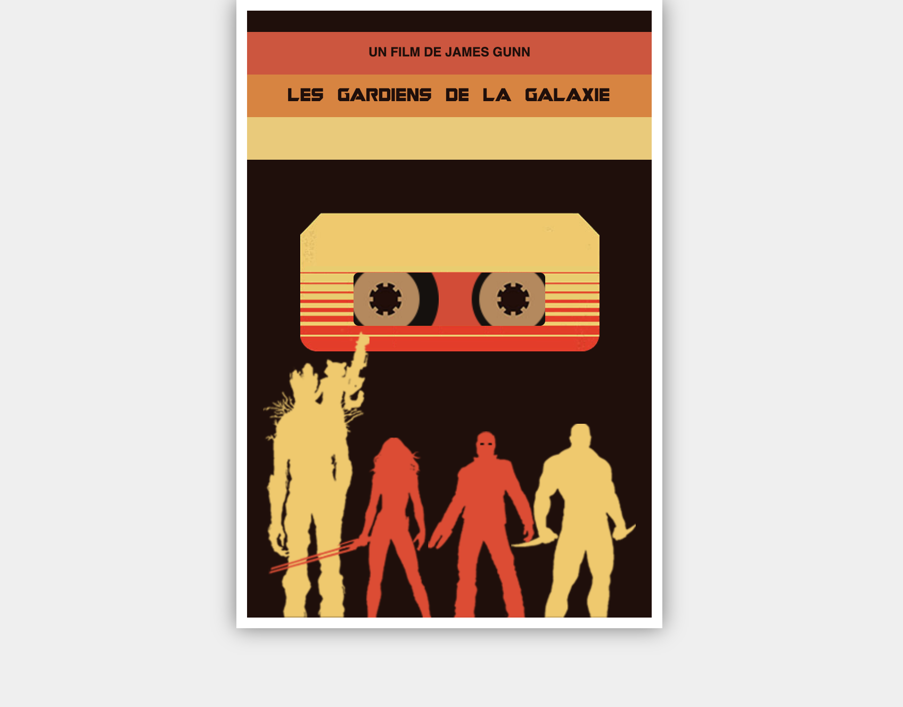

Pour cet examen, nous allons recréer une affiche minimaliste du film Les Gardiens de la Galaxie.
Aperçu du résultat 👇

Matériel
Dossier de départ
Couleurs 🎨
#efefef
#210e0a
#e33e2a
#dc4c34
#e77f2f
#eec66c
Le HTML est déjà fourni. Vous ne devez en aucun cas le modifier.
Requis de base
Le couleur de fond de la page doit être blanc cassé ⚪️
L'affiche (.poster), doit mesurer 400px par 590px, être brune 🟤, avoir une bordure blanche ⚪️ de 10px de tous les côtés et être parfaitement centrée horizontalement ↔️.
L'affiche doit avoir une ombre de 20px, égale de tous les côtés. Cette ombre doit être noire ⚫️, mais ce noir doit avoir une opacité de 50%.
Bandes de couleur
Chaque bande (.stripe) doit avoir une hauteur totale de 40px.
Le texte doit-être en 12px, être centré horizontalement ↔️ et être de couleur brune.
1ière bande
La bande doit être de couleur orange brulé et se situer à 20px du haut de l'affiche.
Le texte doit utiliser la police Helvetica, si cette dernière n'est pas disponible, le navigateur devra utiliser Arial comme police de substitution (ces polices sont natives sur Mac et Windows).
Utilisez la propriété CSS permettant de transformer le texte en majuscules.
Centrez verticalement le texte dans la bande ↕️.
2ième bande
La bande doit être de couleur orange.
Le texte doit-être utiliser la police guardians.woff2 se trouvant dans le dossier ./polices du dossier de départ.
La police doit absolument rester dans le dossier ./polices.
3ième bande
La bande doit être de couleur jaune.
Cassette
La zone de la cassette (.tape) doit prendre toute la largeur de l'affiche et mesurer 130px de haut.
L'image tape.webp doit-être utilisé comme image d'arrière-plan. Elle doit prendre un maximum d'espace tout en étant entièrement visible (ne pas être coupée) et être positionnée horizontalement dans l'espace.
La fenêtre (.window) doit être rouge, mesurer 180px par 50px, avoir des coins arrondis de 5px, être centrée horizontalement et alignée verticalement avec la première ligne rouge de la cassette.
 Les bobines (.reel) sont déjà de la bonne dimension. Il suffit de les positionner dans la fenêtre afin qu'elles soient partiellement tronquées comme sur la référence visuelle.
Les bobines (.reel) sont déjà de la bonne dimension. Il suffit de les positionner dans la fenêtre afin qu'elles soient partiellement tronquées comme sur la référence visuelle.
 Gardiens
Positionnez les gardiens dans le bon ordre au bas de la page. Faites attention à ce qu'ils soient précisément alignés avec le début de la bordure blanche.
Faites attention à l'arme de Gamora qui doit passer par-dessus les jambes de Groot.
Remise
Renommez votre dossier "ex1_[nom]_[prenom]".
Zippez votre dossier "ex1_[nom]_[prenom]".
Joignez votre fichier .zip au devoir "EX01: Les Gardiens de la Galaxie".
Notes de cours 📚
Timdoc / 582-215MO
Gardiens
Positionnez les gardiens dans le bon ordre au bas de la page. Faites attention à ce qu'ils soient précisément alignés avec le début de la bordure blanche.
Faites attention à l'arme de Gamora qui doit passer par-dessus les jambes de Groot.
Remise
Renommez votre dossier "ex1_[nom]_[prenom]".
Zippez votre dossier "ex1_[nom]_[prenom]".
Joignez votre fichier .zip au devoir "EX01: Les Gardiens de la Galaxie".
Notes de cours 📚
Timdoc / 582-215MO